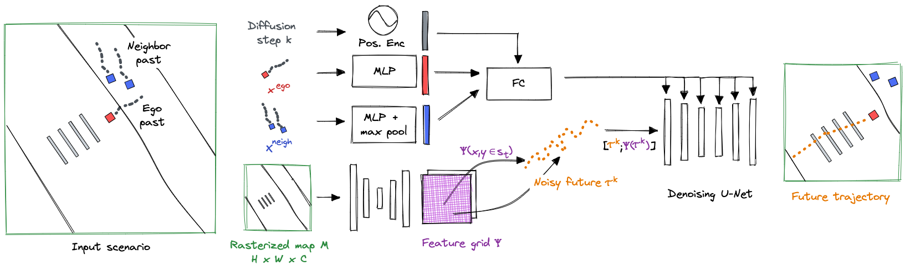
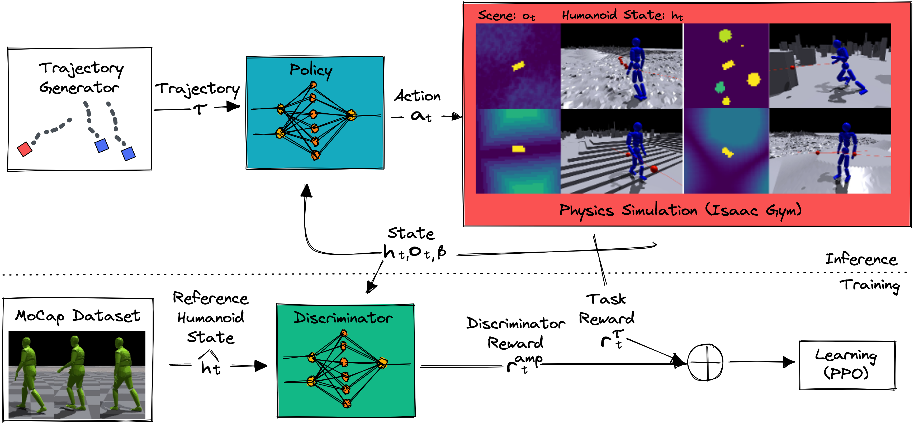

We introduce a method for generating realistic pedestrian trajectories and full-body animations that can be
controlled to meet user-defined goals. We draw on recent advances in guided diffusion modeling to achieve
test-time controllability of trajectories normally only associated with rule-based systems. Our guided
diffusion model allows users to constrain trajectories through target waypoints, speed, and specified social
groups while accounting for the surrounding environment context. This trajectory diffusion model is integrated
with a novel physics-based humanoid controller to form a closed-loop, full-body pedestrian animation system
capable of placing large crowds in a simulated environment with varying terrains. We further propose utilizing
the value function learned during RL training of the animation controller to guide diffusion to produce
trajectories better suited for particular scenarios such as collision avoidance and traversing uneven terrain.
TRACE: Controllable Trajectory Diffusion

For trajectory generation, we introduce a TRAjectory Diffusion Model for Controllable
PEdestrians (TRACE). Inspired by recent successes in trajectory generation through denoising,
TRACE generates the future trajectory for each pedestrian in a scene and accounts for the surrounding context
through a spatial grid of learned map features that is queried locally during denoising.
User-controlled sampling is achieved through test-time guidance, which perturbs the output at each
step of denoising toward the desired objective. We introduce several analytical loss
functions for pedestrians and re-formulate trajectory guidance to operate on clean trajectory outputs from
the model, improving sample quality and adherence to user objectives.
PACER: Physics-based Humanoid Controller

For character animation, we develop a general-purpose Pedestrian Animation
ControllER (PACER) capable of driving physics-simulated humanoids with diverse body types
to follow trajectories from a high-level planner. We focus on (1) motion quality: PACER learns from
a small motion database to create natural and realistic locomotion through adversarial motion learning;
(2) terrain and social awareness: by learning in diverse terrains with other humanoids, PACER learns to
move through stairs, slopes, uneven surfaces, and to avoid obstacles and other pedestrians; (3) diverse
body shapes: by training on different body types, PACER draws on years of simulation experience to control
a wide range of characters; (4) compatibility with high-level planners: PACER accepts 2D waypoints and can
be a plug-in model for any 2D trajectory planner.
End-to-end Pedestrian Animation System
We demonstrate a controllable pedestrian animation system using TRACE as a high-level planner for PACER, the
low-level animator. The planner and controller operate in a closed loop through frequent re-planning according
to simulation results. For more extensive video results see the supplementary webpage.
Our system enables simulating large crowds of pedestrians. Guiding trajectory diffusion helps to
avoid collisions (left) and form social groups specified by a user (right).
Pedestrians naturally avoid a majority of collisions in crowds.
Guidance enables user-defined social groups.
Our character controller is robust to a variety of terrains (left), and diffusion guidance enables
avoiding obstacle collisions while traveling to a goal location (right).
PACER is robust to a variety of terrains within physical simulation.
Guidance enables obstacle avoidance while going to waypoints.
A promising applications of our system is the ability to generate synthetic data in urban scenes with realistic
dynamic agents. This is useful, for example, for developing and testing autonomous vehicles.
Simulated crowds in streets handle curbs and steep slopes.
Targeting animations to textured characters for synthetic data.
@inproceedings{rempeluo2023tracepace,
author={Rempe, Davis and Luo, Zhengyi and Peng, Xue Bin and Yuan, Ye and Kitani, Kris and Kreis, Karsten and Fidler, Sanja and Litany, Or},
title={Trace and Pace: Controllable Pedestrian Animation via Guided Trajectory Diffusion},
booktitle={Conference on Computer Vision and Pattern Recognition (CVPR)},
year={2023}
}